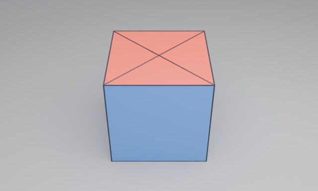
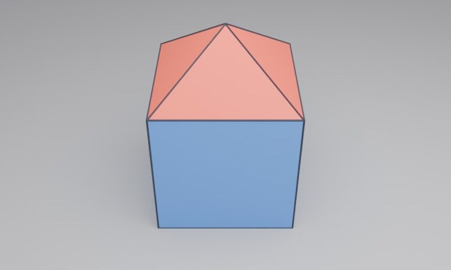

Bonus lesson
Poke Faces
Poke Faces splits each selected face into a triangle fan. Blender adds a new center vertex to the face and makes triangles between the original edges and that vertex. You find it in Edit Mode under Face › Poke Faces.
1. One face selected
2. Poke, no offset

3. Poke with an offset

Options
The Offset can be used to make spikes or depressions.
- Poke Offset: moves the new center vertex along the face normal.
- Offset Relative: multiplies the offset by the average length from the center to the face vertices.
- Poke Center: how the center of the face is computed. Weighted Median uses the mean average weighted by edge length, Median uses the plain mean average, and Bounds uses the center of the bounding box.
Read the manual page on Poke Faces.
Try it
This exercise is our own suggestion and has not been run step by step in the GUI. Add a cube, enter Edit Mode and switch to Face select mode. Select the top face and choose Face › Poke Faces. Open the Adjust Last Operation panel and try a positive and a negative Poke Offset. Use Ctrl+Z to undo.